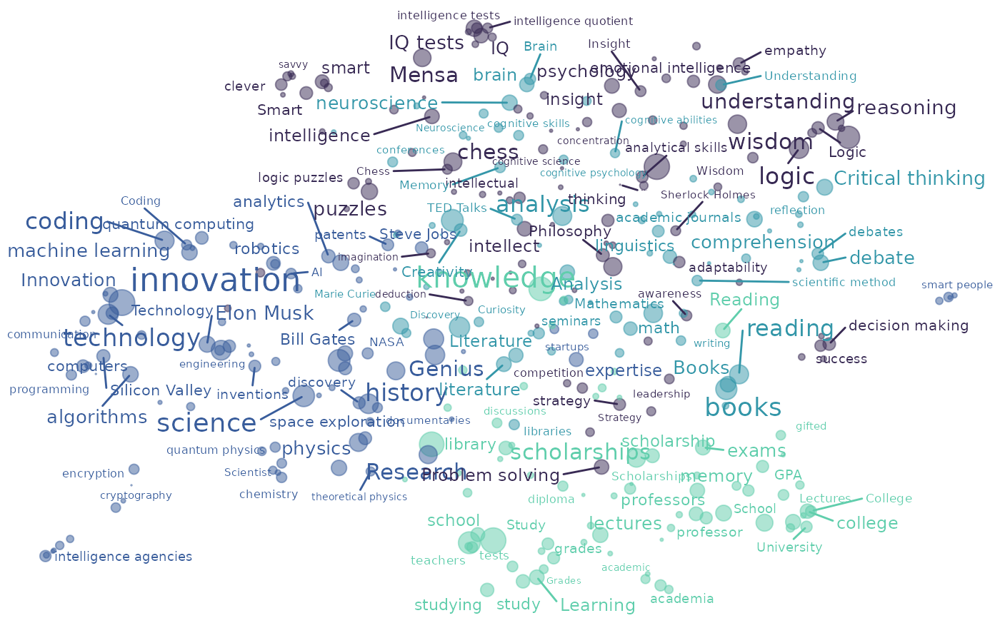

Generate two dimensional plot for associatoR object.
Usage
ar_plot_embedding(
associations,
color_by = NULL,
color_set = "G",
alpha = 0.5,
proportion_labels = 1,
...
)Arguments
- associations
an
associatoRobject containing association data as generated by ar_import with targets defined by ar_set_targets.- color_by
name of variable to generate column facets by.
- color_set
a
characterstring specifying the color set. One ofc("A","B","C","D","E","F","G","H"). See scale_color_viridis_d.- alpha
a
numericvalue between 0 and 1 specifying the transparency of points. Default is.5.- proportion_labels
a
numericvalue between 0 and 1 specifying the proportion of labels shown in the plot. Values smaller than 1 omit 1-proportion_labelsof labels for lower frequency targets.- ...
optional arguments passed on to geom_text_repel.
Value
Returns a ggplot plot object.
Examples
ar_import(intelligence,
participant = participant_id,
cue = cue,
response = response,
participant_vars = c(gender, education),
response_vars = c(response_position, response_level)) %>%
ar_set_targets("cues") %>%
ar_embed_targets() %>%
ar_cluster_targets() %>%
ar_project_embedding() %>%
ar_plot_embedding(color_by = cluster,
proportion_labels = .5)
#> 456 targets with count < min_count were dropped from embedding.
#> Warning: ggrepel: 16 unlabeled data points (too many overlaps). Consider increasing max.overlaps
